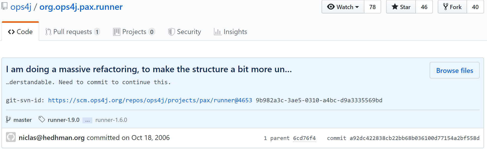

Home
Case Study 1
Case Study 2
Case Study 3
Case Study 4
Case Study 5
Refactoring Motivation: Internal Quality Attribute Improvement
Commit Message
Click here to view on GitHub

Refactorings (69 instances)